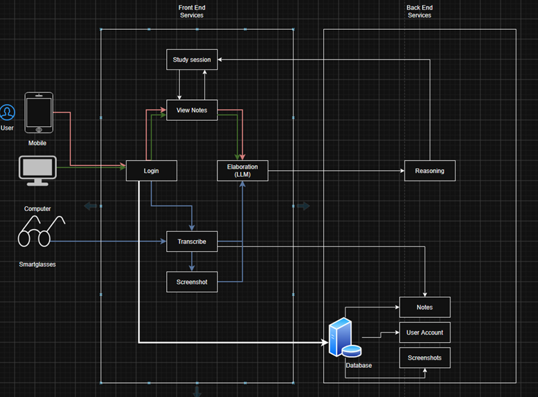

insight.
A learning assistant that listens, reads your slides, and turns presentations into organized notes.

What problem are we addressing?
Students and employees often struggle to take complete notes during lectures, meetings, and presentations. Trying to listen, watch, and write at once means important details get missed, and current note taking apps still require manual organization. People may also have unanswered questions or spend a lot of time reviewing disorganized notes.
What is our project idea and how does it work?
Insight uses AI glasses to record the presenter's audio while the user can upload slides or take photos. The system transcribes the speech, extracts slide content, and combines both into organized notes and summaries. An AI assistant lets users ask follow up questions about their notes. Insight will be accessible through an iPhone app and a website.

Components
Website / App – The website/app will allow users to upload slides, review recorded audio, and view notes. Transcriptions and photos taken by the user will be automatically stored and organized, allowing for quick and easy access. An AI assistant will help users find crucial information, elaborate on key topics, and answer follow up questions.
Presentation Processing – Insight's AI glasses will offer realtime audio transcription, the ability to capture photos, as well as automatic generation and organization of notes and summaries. This ensures the information from presentations is able to be easily captured and reviewed, allowing users to focus on presentations while Insight manages the rest.
Data Storage – Users will have individual accounts associated with their insight AI glasses. This account will allow them to access their notes, audio transcripts, and photos/slides. It will also allow them to ask the AI assistant questions about any topics or content they have saved, and create custom summaries and review guides.